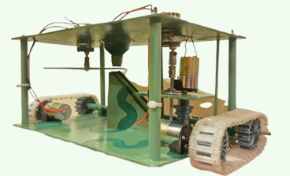

Imagens


Projeto Integrador 2
Controlo Digital
Unidade curricular
Projeto Integrador em EEIC 2
Ano
3.º ano, 2.º semestre · 2024/25
Equipa
4 elementos e orientador

A versão final do AGROBOT, com controlo digital pela STM32.
Este projeto retoma o AGROBOT do semestre anterior — o robô agrícola que perfura o solo, deposita uma semente e a cobre. A missão é a mesma. O que muda é tudo o que decide.
No PI1, a sequência de estados vivia numa teia de temporizadores 555 e portas lógicas soldadas. Aqui, essa mesma sequência é descrita formalmente em GRAFCET e implementada num microcontrolador. O resultado é um sistema mais robusto, mais preciso e — sobretudo — mais fácil de alterar.
O sistema divide-se em três subsistemas, todos coordenados pela mesma unidade de controlo:
A unidade de controlo é uma STM32H755ZI-Q, que gera os sinais PWM para as pontes H e lê as saídas do encoder e dos fins de curso. A alimentação vem de uma bateria recarregável LiFePO₄ de 12 V e 8 Ah, com sistema de gestão integrado (BMS) que protege contra sobrecarga, curto-circuito e descarga profunda.
O GRAFCET descreve o ciclo como uma máquina de estados formal, com entradas (START, STOP, o encoder de distância, os dois fins de curso) e saídas (os sinais de cada motor):
Um botão de STOP de emergência é verificado ao longo de todo o processo: se for acionado, o ciclo é interrompido e o sistema regressa ao estado inicial.
O robô foi testado ao longo de 15 ciclos consecutivos em laboratório, com uma distância alvo de 100 cm por ciclo.
15
ciclos testados
~70 s
tempo médio por ciclo
1501 cm
distância total percorrida
1054 s
tempo total
As distâncias medidas mantiveram-se próximas do valor pretendido, e o incremento da distância ao longo do tempo mostrou-se linear — um sinal de comportamento consistente e previsível. Vale ressalvar que os ensaios decorreram em ambiente laboratorial, não em terreno real.
A mesma função, resolvida duas vezes. O que a passagem ao digital trouxe:
EDITA: substitui ID_DO_VIDEO pelo código do teu vídeo do YouTube (não listado).